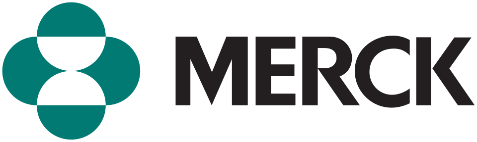

Merck & Co.
MSD(Merck & Co.)는 미국의 제약 회사로, 미국과 캐나다에서는 Merck & Co., Inc.라는 이름을 사용하고 그 밖의 지역에서는 MSD 또는 Merck Sharp & Dohme를 사용한다.
최종 업데이트

Merck & Co.는 어떤 브랜드인가
MSD는 미국에 기반을 둔 제약 회사이며 본사는 Kenilworth에 있다. 미국과 캐나다에서는 Merck & Co., Inc.로 등록되어 있고, 이외 지역에서는 Merck Sharp & Dohme 또는 MSD를 쓴다.
독일의 머크와는 제1차 세계대전 이후 분리된 별개의 회사이며, 양사는 지역에 따라 명칭을 나누어 사용한다. 의약품과 백신을 다루며 키트루다, 가다실, 로타텍, 코자, 자누비아 등을 제품군에 두고 있다.
대한민국에는 1994년 한국MSD를 설립해 진출했고, 2009년 3월 쉐링푸라우를 인수해 규모를 확대했다.
Merck & Co.는 어떻게 시작되고 성장했나
1891년 George Merck가 설립했다. 그 전신의 흐름은 19세기 후반 독일 머크가 미국에 세운 자회사와 연결되며, 제1차 세계대전 중 독일계 회사였던 미국 자회사의 재산은 미국 정부에 몰수되었다.
1917년 미국 국적의 George W. Merck가 몰수된 재산을 환수받아 독일 머크와 완전히 다른 새 회사를 세웠다.
대한민국에서는 1982년 중외제약 등과 기술제휴를 맺기 시작했고, 1994년 현지법인 한국MSD를 설립했다. 2009년 3월에는 쉐링푸라우를 411억 달러에 인수했다.
Merck & Co.의 브랜드 아이덴티티는 무엇인가
독일 머크와 별개인 미국 제약 회사로서, 협약에 따라 미국·캐나다와 그 밖의 지역에서 서로 다른 명칭을 사용하는 점이 구분점이다.
Merck & Co.의 대표 제품과 서비스는 무엇인가
제품군은 의약품과 예방 접종용 백신으로 구성된다. 키트루다를 비롯해 자궁 경부암 예방 접종용 백신 가다실, 로타바이러스 예방 접종용 백신 로타텍, 폐렴 구균 예방 접종용 백신 프로디악스-23을 다룬다.
치료제에는 고혈압 치료제 코자, 고지혈증 치료제 아토젯, 당뇨치료제 자누비아와 자누메트가 있다. 레메론은 미르타자핀 계열의 노르아드레날린 특정 세로토닌 사환계 항우울제이다.
탈모치료제 프로페시아도 제품 목록에 포함된다.
Merck & Co.는 지금 어떤 상태인가
본사는 Kenilworth에 있으며, 미국과 캐나다에서는 Merck & Co., Inc., 그 밖의 지역에서는 MSD 또는 Merck Sharp & Dohme라는 이름을 쓴다. 2009년 3월 쉐링푸라우를 411억 달러에 인수했으며, 대한민국에는 현지법인 한국MSD를 설립했다.
Merck & Co. 로고는 어떻게 변해왔나
자주 묻는 질문
Merck & Co.는 어느 나라 브랜드인가요?
Merck & Co.는 미국의 헬스·제약 브랜드입니다.
Merck & Co.는 언제 설립되었나요?
Merck & Co.는 1891년 설립되었습니다.
Merck & Co.의 브랜드 아이덴티티는 무엇인가요?
독일 머크와 별개인 미국 제약 회사로서, 협약에 따라 미국·캐나다와 그 밖의 지역에서 서로 다른 명칭을 사용하는 점이 구분점이다.
Merck & Co.의 대표 제품은 무엇인가요?
제품군은 의약품과 예방 접종용 백신으로 구성된다.
Merck & Co.의 본사는 어디에 있나요?
본사는 Kenilworth에 있으며, 미국과 캐나다에서는 Merck & Co., Inc., 그 밖의 지역에서는 MSD 또는 Merck Sharp & Dohme라는 이름을 쓴다.
Merck & Co.의 창업자는 누구인가요?
Merck & Co.의 창업자는 George Merck입니다(위키데이터 기준).
Merck & Co.의 공식 웹사이트는 어디인가요?
Merck & Co.의 공식 웹사이트는 https://www.merck.com 입니다.
출처와 검증
Merck & Co. 관련 참고: 공식 웹사이트 · 위키데이터 Q247489 · 한국어 위키백과 · 영어 위키백과. 브랜드명은 한글과 원어를 함께 표기하되 데이터에 없는 표기는 만들지 않습니다. 기원 국가·설립연도는 검수된 정의문에서 확인된 값을 우선하고, 없을 때만 공식 웹사이트 URL이 일치하는 위키데이터 개체의 값을 씁니다. 위키데이터 값은 2026-09-12 기준입니다.